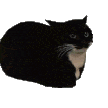

Chapter 3: Why now?
I know ab mere words ya sorry ka koi matlab nahi raha, but I need to say this. Some recent events have really made me realize where I was wrong and just how badly I treated the people around me. I hate that I only understood your true value after losing you. But the truth is, I’ve always put so much of my heart and effort into you because I knew how much you’ve been through, how tough things still are for you, and I just wanted to be there because i deeply cared for you and still do till this day, through your lowest and your highest.(hidden letter is T)You were the only person I genuinely cared about, even more than my own family at times. But somewhere along the way, I changed, and everything went downhill. No matter what you think, I never faked anything, and I would never betray you. I could never hurt someone I loved the most. I know I messed up, and I know I can’t undo the damage, but I just want you to know that I’m truly sorry for everything. You deserved way better from me and i am ashamed of myself for being the guy who hurt you.
 Back to Home